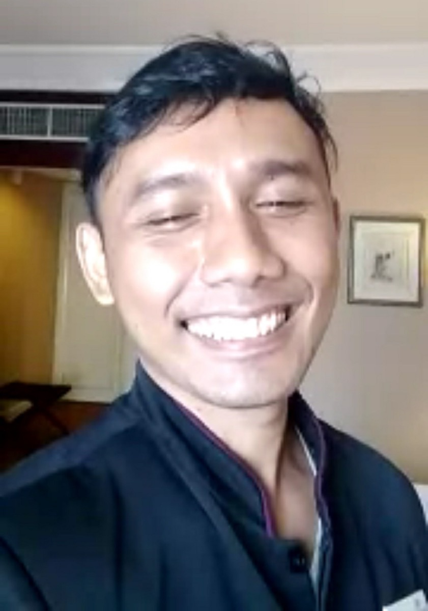
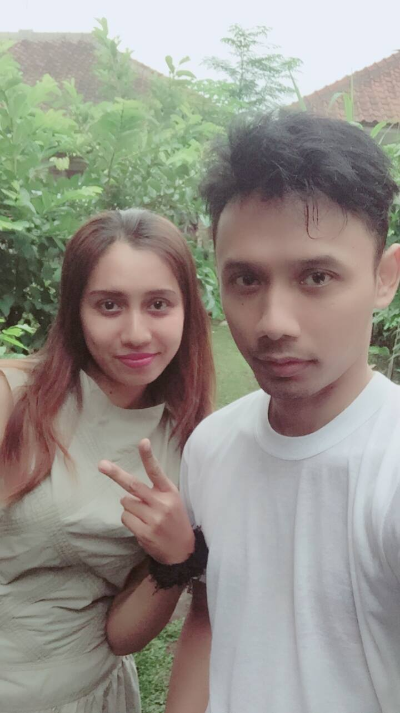

Halo bray! Balik lagi di catatan gw di Bunker Opanowski.
Hari ini, 8 Mei 2026, gw dapet bukti nyata pentingnya jaga akses digital. Gw berhasil pulihin akun Kaskus lawas 'opanowski' berkat bantuan CS Kaskus yang sigap ganti email mati gw jadi email aktif. Ini bukan cuma soal akun lama, tapi soal sejarah digital yang gak boleh ilang bray!
Mumpung lagi nunggu jemputan, gw mau bongkar dapur dikit soal cara gw "memagari" semua kenangan Si Bontot biar aman sentosa. Cekidot!
1. Kumpulin Semua "Serpihan" Kenangan
Jangan biarkan foto-foto doi mencar-mencar. Ada yang di HP emak, ada yang di laptop lama, ada yang di kartu memori yang udah berdebu. Tarik semua ke satu folder master. Kasih nama yang jelas, misal Bontot_Archive. Jangan cuma 'New Folder (1)', ntar lo bingung sendiri pas nyari!

2. Backup Pake Rumus 3-2-1 (Biar Gak Nangis Darah!)
Ini rumus wajib buat para tech-user kayak kita. Jangan cuma simpan di satu tempat:
Pas lagi serius-seriusnya gw nyusun baris kode buat log ini, tiba-tiba ada "iklan" lewat. Ayam di kandang aviary gw bunyi petok-petok heboh banget. Alhamdulillah, jam 8 tadi udah nelor, eh sekarang jam 11 nelor lagi! Karena cuma ada 2 ekor, ya maksimal dapet 2 telur hari ini, tapi itu udah rezeki nomplok banget bray. Bgitulah di Villa Ciracas, urusan dunia digital (GitHub) harus sering-sering ngalah sama urusan logistik alam. Gw tinggalin dulu laptop demi jemput protein seger. Ngoding boleh kenceng, tapi stok telor jangan sampe kosong! Hahaha.
3. Akun Sosmed? Mode Kenangan On!
Sosmed almarhum itu gudang memori. Biar gak ilang atau disalahgunakan orang iseng, atur Legacy Contact di Facebook buat ubah akun jadi 'Memorialized Account'. Jadi orang masih bisa liat foto-fotonya buat lepas kangen, tapi akunnya gak bakal bisa diacak-acak orang asing.

4. Bikin "Bunker" Khusus di GitHub
Karena gw lagi hobi mainan GitHub Pages, gw buatin satu halaman khusus buat Bayu. Isinya galeri foto pilihan sama cerita singkat. Kelebihannya?
Selama GitHub masih ada, kenangan itu bakal tetep live tanpa perlu bayar hosting mahal-mahal tiap tahun, bray!
📌 Kesimpulan
Mengamankan data Si Bontot itu cara gw buat bilang: "Lo tetep ada, Yu." Kenangan emang di hati, tapi file digital itu bukti sejarah yang harus kita jaga dengan presisi.
Empat langkah tadi — kumpulin serpihan, backup 3-2-1, legacy contact sosmed, sama bunker GitHub — itu bukan overkill. Itu standar minimum buat generasi kita yang hidupnya udah separuh di dunia digital.